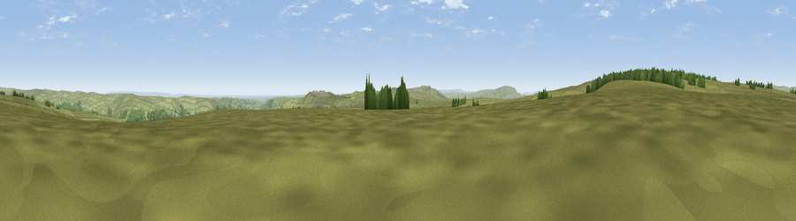

Viewpoint near Wath
#15738 in England · top 29% of its area beats it · near WathThe view, rendered

A 360° render of this exact spot computed from the terrain model, tree cover and land cover — summer colours, afternoon light, calibrated against photographs of famous viewpoints. Real trees, hedges and buildings will differ in detail.
The panorama
Grey silhouette: terrain skyline in each direction (720 bearings, Earth curvature and refraction included). Dashed green: skyline with trees (+15 m) and buildings (+8 m) as obstacles. Blue strip: how far the ground is visible on each bearing.
Where the view opens
Wedge length = distance to the farthest visible ground on that bearing (vegetation-aware). Rings at 10, 25 and 50 km.
What fills the view
91% grassland · 7% woodland · 1% cropland ·
Angular shares of the visible panorama (visual magnitude), not map area. Landscape diversity 0.16 (0–1 Shannon).
Key numbers
More beautiful places nearby
The staircase of upgrades: each row has a higher view potential than everything closer. Driving times are estimates from straight-line distance, calibrated against real road routing — check an actual route before setting out.
| Place | Direction | Drive | Score |
|---|---|---|---|
| Sikes Ridge | W · 3 km | ~7 min | 59.7 |
| Viewpoint near Bewerley | SE · 4 km | ~10 min | 76.8 |
| Viewpoint near Buckden | NW · 18 km | ~31 min | 77.3 |
| Viewpoint near East Witton | NNE · 18 km | ~31 min | 77.8 |
| Little Ingleborough | W · 36 km | ~54 min | 78.8 |
| Viewpoint near Ingleton | W · 36 km | ~55 min | 79.5 |
| Whernside | WNW · 39 km | ~58 min | 79.9 |
| Viewpoint near Kirby Knowle | ENE · 41 km | ~60 min | 80.5 |
54.10397, -1.85047 · source: screening · position refined by local search. Computed location — check access rights before visiting.